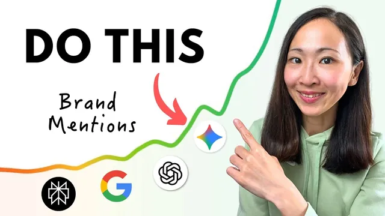

AI 검색에서 우리 브랜드가 1순위로 뜨게 하는 SEO 방법

원본 영상 보기 →
- AI 검색은 순위가 아니라 추천 결정이에요
- 데이터로 시작하고 AI는 가속기로 써요
- 막혀 있으면 나머지는 의미가 없어요
한 줄 요약
Grace Leung은 AI 검색 시대의 최적화를 "AI가 내 콘텐츠를 좋아하게 만들기", "AI가 내 브랜드를 믿게 만들기", "AI가 내 사이트를 싫어하지 않게 만들기" 세 가지 관계로 나눠요. 영상에서는 Semrush One 화면을 따라가며 이 세 관계를 다지는 여섯 가지 방법을 순서대로 보여 줍니다.
전체 내용 정리
AI는 콘텐츠를 찾는 데서 끝나지 않고 브랜드를 추천할지 말지 결정해요
Grace는 AI 검색이 먼 미래 이야기가 아니라 이미 지금의 일이라고 말해요. AI는 내 콘텐츠를 그냥 찾아 주는 데서 멈추지 않고 이 브랜드를 추천할지 아예 무시할지를 스스로 정한다는 거예요. 그래서 최적화 방식 자체를 다시 생각해야 한다고 봅니다.
Grace가 제안하는 틀은 AI와 맺는 세 가지 관계예요. 첫째는 AI가 내 콘텐츠를 좋아해서 출처로 쓰게 만드는 것이고 둘째는 AI가 내 브랜드를 믿어서 추천하게 만드는 것이에요. 셋째는 AI가 내 사이트를 싫어해서 걸러 내는 일이 없도록 하는 것입니다.
이 모든 방법의 대원칙은 "데이터가 먼저, AI는 그다음"이에요.
Grace는 AI를 다들 쓰지만 데이터 없이 쓰면 그냥 짐작일 뿐이라고 말해요. 시연에는 Semrush One을 써요. 기존 SEO 도구(키워드 리서치 등)와 AI visibility 도구(내 브랜드가 AI 검색에서 어떻게 보이는지 보여 주는 기능)를 하나로 합친 솔루션이에요.
이미 콘텐츠가 있다면 키워드 갭을 찾고 AI 브라우저로 개선 목록을 뽑아요
첫 번째 관계는 AI가 내 콘텐츠를 좋아하게 만드는 일이에요. Grace는 AI가 내 사이트를 무시하는 이유가 대개 관련성이 부족해서라고 봐요. 그래서 가장 빠른 첫 승부수는 전통적인 검색 순위를 올리는 거예요. 구글 순위와 AI 인용 사이에 강한 상관관계가 있다는 연구가 있고 Grace의 블로그도 유기 검색에서 순위가 오른 키워드로 Google AI Mode(구글의 AI 검색 모드)에 인용된다고 해요.
시연 대상은 AI 웹사이트 빌더인 typedream.com이에요. 먼저 Domain Overview를 열면 AI visibility score가 나오고 여러 AI 검색 엔진에서 브랜드가 언급된 횟수와 인용된 페이지가 나뉘어 보여요. 아래로 내리면 AI 검색과 구글 검색 각각의 상위 출처 스냅샷도 나옵니다. 이 브랜드는 AI 최적화 여지가 아직 많다는 뜻이에요.
다음은 SEO toolkit의 Keyword Gap 분석이에요. 내 사이트의 순위 키워드만 보지 않고 경쟁사를 넣어서 비교하는 방법이에요.
- 제품과 타깃 고객이 비슷한 경쟁사를 하나 골라 넣어요. 그래야 비교가 의미 있어요.
- 검색엔진이 경쟁사는 그 분야와 연결하는데 나는 연결하지 않는 키워드가 공유 키워드 목록으로 나와요.
- 키워드가 너무 많으니 두 가지로 좁혀요. 하나는 주제 키워드(이 예시에서는 website builder)로 거르는 거예요. 다른 하나는 순위로 거르는 건데 페이지 2~3에 있는 키워드만 보면 올리기 쉬운 후보가 나와요.
- 검색량과 키워드 난이도는 참고만 하고 너무 집착하지 마세요. 우리 ICP(이상적인 고객 프로필)와 비즈니스에 맞는 키워드를 우선하라는 게 Grace의 조언이에요. Grace는 AI 검색이 검색량보다 맥락의 문제라고 말해요(AI search is about context, not just volume).
- 이 목록을 내보내요(export).
여기서 무엇을 고칠지는 Perplexity Comet(AI가 대신 웹을 돌아다니는 AI 브라우저)에 맡겨요. 다른 AI 브라우저를 써도 괜찮다고 해요. 키워드 목록을 올리고 검색 결과 페이지를 살펴보게 해요. 상위에 오른 각 키워드의 페이지와 우리 페이지를 둘러보고 순위를 올리려면 무엇을 고쳐야 하는지 항목으로 뽑아 달라고 요청하는 거예요. 그러면 키워드별로 나눈 콘텐츠 최적화 체크리스트가 돌아와요. Grace는 위험은 낮고 자동화 수준은 높아서 AI를 SEO에 쓰는 가장 좋은 방법 중 하나라고 해요. 결과는 직접 검증해야 하지만 개선 방향을 잡는 출발점으로는 충분해요.
보너스 팁도 하나 있어요. 오래된 통계는 새 관점으로 바꾸고 발행일을 갱신하라는 거예요. Grace는 AI가 콘텐츠의 신선도에 점수를 준다고 봐요. 작은 업데이트가 이 콘텐츠는 최신이고 관련성이 있다는 신호가 된다는 거죠.
새 사이트라면 쓰기 전에 어떤 주제부터 선점할지 정해요
웹사이트가 새로 생겨서 최적화할 콘텐츠조차 없을 때는 어떨까요. Grace는 바로 글을 쓰기보다 어떤 주제를 먼저 다룰지 아는 게 빠른 승부수라고 말해요. AI는 단어의 확률로 움직이니 어떤 주제 키워드와 내 브랜드가 자주 같이 나올수록 AI는 이 브랜드가 그 분야의 전문성을 가졌다고 학습하고 출처로 더 자주 인용한다는 설명이에요.
여기서 쓰는 기능이 SEO toolkit의 Keyword Strategy Builder예요. 씨앗 키워드(seed keyword)를 넣으면 관련 주제 클러스터(주제별 콘텐츠 묶음)를 지도처럼 펼쳐 줍니다. 시연에서는 "AI website builder"를 넣었고 몇 분 뒤에 2000개 가까운 키워드를 분석해서 주제 개요를 만들어 줬어요.
결과는 꽤 구체적이에요. 클러스터마다 중심이 되는 필러 페이지와 하위 페이지가 나뉘어 있고 페이지별로 권위를 세우는 데 도움이 될 타깃 키워드 목록이 붙어요. 가능성이 높은 하위 주제는 따로 강조해 줍니다. Grace는 이런 기획을 과소평가하지 말라고 해요. 주제 클러스터가 곧 내 브랜드가 그 분야에서 권위를 가졌다고 AI에게 알리는 재료라는 거예요.
시연에서는 결과를 전부 내보낸 뒤 우선순위를 정해요. 이 작업에는 Gemini를 추천해요. 컨텍스트 윈도우(한 번에 읽을 수 있는 분량)가 커서 큰 데이터셋을 분석하기 좋기 때문이에요. 데이터셋과 브랜드 소개 문서를 같이 올리고 브랜드 적합도를 기준으로 클러스터의 우선순위를 매겨 달라고 하면 돼요. 어떤 클러스터를 먼저 다룰지와 어떤 브랜드 각도로 접근할지 그리고 노려야 할 상위 키워드가 바로 나옵니다. 이렇게 하면 실행 가능한 콘텐츠 전략 초안이 빠르게 만들어져요.
실제 질문으로 초안을 만들고 경쟁사가 인용되는 출처를 역설계해요
주제를 정했으면 이제 어떤 콘텐츠를 쓸지가 문제예요. Grace는 AI가 키워드만 맞추지 않고 의도와 의미 맥락을 이해한다고 말해요. 그래서 AI가 좋아하는 콘텐츠는 사람들이 던지는 질문에 담긴 구체적이고 맥락 있는 필요를 정확히 채워야 해요. 앞에서 세운 전략에서 portfolio website가 한 클러스터의 강한 타깃 키워드라고 가정하고 질문을 모으는 방법이 두 가지 나와요.
첫 번째는 SEO toolkit의 Keyword Magic Tool이에요.
- 키워드를 입력해요. 도메인도 같이 넣으면 데이터가 내 사이트에 맞게 개인화돼요.
- Questions 탭으로 가요. 사람들이 이 키워드와 관련해 실제로 던진 질문 목록이 나와요. 대부분 정보 탐색형이고 예를 들면 "how to make a good portfolio website for marketing" 같은 질문이에요.
- Grace는 정보 탐색형 의도도 AI 검색에서 여전히 중요하지만 내 비즈니스와 관련 있을 때만 그렇다고 해요. 목록을 검토해서 맞는 질문만 내보내요.
- 질문 옆의 SERP overview 아이콘을 누르면 검색 결과 구성이 보여요. 어떤 질문은 영상이 잘 오르고 어떤 질문은 이미지가 잘 올라서 그 질문에 맞는 콘텐츠 형식을 가늠할 수 있어요.
두 번째는 AI visibility toolkit의 Prompt Research예요. 1억 개가 넘는 프롬프트가 쌓인 새 데이터베이스인데 주제나 씨앗 키워드를 넣으면 Semrush가 미리 정해 둔 주제를 제안하고 그중 가장 관련 있는 것을 고르면 돼요. 그러면 AI 검색량이 큰 프롬프트와 상위 브랜드 그리고 출처 도메인이 나와요. ChatGPT, Google AI Mode, AI overview처럼 플랫폼별로 거를 수도 있어요.
프롬프트 하나의 full response를 열면 AI 답변 스냅샷과 언급된 상위 브랜드 그리고 쓰인 출처가 보여요. 브랜드 뷰에서는 이 주제에서 실제로 누구와 경쟁하는지 알 수 있고 소스 도메인 뷰에서는 AI가 정보를 어디서 가져오는지 보여요. 이 예시에서는 YouTube, LinkedIn, Reddit이 나왔고 Grace는 이 브랜드가 집중할 만한 다른 채널일 수 있다고 봐요.
이제 "how to make a digital portfolio" 프롬프트를 최적화한다고 해 볼게요. Grace가 보여 준 순서는 이래요.
- 해당 응답에 인용된 출처를 전부 복사해요.
- NotebookLM(올린 자료만 근거로 분석해 주는 Google의 AI 노트 도구)에 가서 이 URL들을 소스로 가져와요.
- 이 소스들을 분석해서 AI 검색 최적화 콘텐츠를 위한 커스텀 지시문을 만들어 달라고 해요. 콘텐츠에 쓸 의미 키워드 같은 핵심 요소가 자세히 정리돼 나와요.
- NotebookLM의 Studio 기능에 이 지시문을 그대로 넣어 블로그 글을 만들어요. 가장 많이 인용된 출처들의 분석에 근거한 초안이 바로 생겨요.
단 이 결과를 그대로 복사해 쓰지는 말라고 Grace는 강조해요. AI는 정보 이득(information gain)에 보상을 주니 내 경험과 관점을 꼭 더하라는 거예요.
콘텐츠 계획이 섰다면 이번에는 AI 검색엔진이 경쟁사를 어떤 주제에서 언급하고 어떤 출처를 쓰는지 살펴봐요. Grace는 AI가 아무나 무작위로 인용하지 않는다고 말해요. 경쟁사가 잘하는 점을 거꾸로 분석하면 내 콘텐츠가 인용될 확률도 훨씬 높아진다는 논리예요.
같은 예시로 AI visibility의 Overview에 들어가면 ChatGPT, AI Overview, AI Mode, Gemini에서 내 브랜드가 얼마나 자주 언급되고 인용됐는지 보여요. 아래로 내려 성과가 좋은 주제를 보고 하나를 누르면 그 주제에서 나를 언급한 프롬프트와 빠져 있는 프롬프트가 갈라져 나와요. 시연에서는 codeless website builders 주제를 골랐어요. 프롬프트 상세를 열어 보면 집중해야 할 주제 기회가 바로 보이고 cited sources에서는 내 브랜드가 언급되는 상위 도메인과 아직 빠져 있는 도메인(출처 기회)을 확인할 수 있어요. 내 도메인이 출처로 쓰인 상위 인용 페이지도 열어서 프롬프트 상세까지 내려갈 수 있고요. 여기까지가 기준선이에요.
이제 경쟁사와 비교해서 진짜 격차를 찾아요. Competitor Research에서 대표적인 경쟁사를 넣으면 언급 수와 주제와 프롬프트 그리고 인용 출처에서 내 AI 검색 가시성이 어떻게 비교되는지 한눈에 나와요. 경쟁사는 언급되는데 나는 빠진 주제도 보이고 소스 뷰에서는 출처별 비교도 가능해요.
Grace가 말하는 빠른 성과는 약한 주제를 찾는 거예요. 내 브랜드가 언급은 되지만 경쟁사만큼 자주 나오지 않는 주제요. 시연에서는 "Figma 대안으로 쓸 만한 게 있나요(are there any good alternatives to Figma?)"를 골랐어요.
- 그 프롬프트의 출처를 모두 복사해요.
- 앞에서와 같은 방식으로 NotebookLM에 넣되 이번에는 내 웹페이지도 같이 올려요.
- 핵심은 내 페이지와 소스들을 비교해서 AI 인용을 높일 수 있는데 내게 빠진 요소를 찾아 달라고 하는 거예요.
- 그 새 인사이트를 정리하게 하고 같은 방법으로 최적화된 콘텐츠를 만들어요.
한 걸음 더 나가서 NotebookLM에서 의사결정 플로 차트 인포그래픽을 만들게 할 수도 있어요. Nano Banana 모델로 만들어지는 기능이고 Grace는 이렇게 하면 AI 인용에 더 유리한 멀티모달 콘텐츠가 된다고 해요.
두 번째 관계인 신뢰는 내 사이트 바깥에서 쌓아요
두 번째 관계는 AI가 내 브랜드를 믿게 만드는 일이고 Grace는 브랜드 평판과 다른 곳에서 나를 어떻게 말하는지가 전부라고 해요. AI는 내 웹사이트만 보지 않고 여러 플랫폼에 걸쳐 권위를 검증한 다음에 브랜드를 언급하거나 출처로 인용한다는 거죠. 그러니 목표는 내 도메인 밖에서 권위 신호를 충분히 쌓고 그것을 강화하는 거예요.
첫 번째 방법은 제3자 매체를 찾는 거예요. 이번 시연에는 webflow.com을 예로 써요.
- AI visibility 아래의 Brand Performance로 들어가요. AI 분석과 달리 AI가 내 브랜드를 어떻게 인식하는지와 점유율(share of voice)을 추적하는 메뉴예요.
- 도메인과 타깃 지역을 넣어요. 모든 AI 검색엔진에서 결과를 가져오는 데 시간이 조금 걸려요.
- 경쟁사 대비 share of voice와 감성(sentiment)이 AI 검색엔진별로 나와요. 어디서 앞서고 어디서 뒤처지는지 보여요.
- Narrative Driver에서 AI 검색엔진을 하나 골라 더 깊이 들여다봐요. Webflow는 전반적으로 경쟁사를 앞서고 특히 ChatGPT에서 강했어요. 그러면 어떤 AI 검색엔진에 집중할지 알 수 있어요.
- 여기 있는 질문 섹션을 Grace는 금광이라고 불러요. 브랜드 질문과 비브랜드 질문이 인용 방식과 순위와 함께 나오니 제3자 사이트에 제안할 때 그 사이트가 뭘 중요하게 보는지 파악할 수 있어요. 경쟁사는 순위에 있고 나는 없는 질문만 걸러 보는 게 특히 좋아요.
- 오프사이트 신호는 Top Citations에서 만들어요. 이 분야에서 영향력 있는 도메인(매체, 주요 언론, 소셜 채널)이 나열되고 언급된 브랜드로 거르거나 제3자 도메인을 눌러서 공략할 페이지와 그 페이지의 내용을 볼 수 있어요. 하나씩 훑으면서 아웃리치 가능성을 따져요.
두 번째 방법은 소셜 미디어와 커뮤니티 활용이에요. 여러 채널에서 존재감이 있고 언급될수록 신뢰 신호가 커진다는 게 Grace의 설명이에요. 다시 cited pages에서 Reddit, YouTube, LinkedIn, Quora 같은 잘 알려진 소셜 도메인만 거르면 브랜드 언급을 이끌어 내는 스레드 목록이 나와요. 거기에 직접 참여해서 우리 브랜드의 이야기를 이끌 수 있어요. YouTube나 LinkedIn이라면 어떤 콘텐츠 주제가 브랜드 언급을 만드는지 보고 인플루언서 캠페인을 할 만한지도 따져 볼 수 있습니다.
그중에서 브랜드 언급을 일으키는 주제를 골라요. 시연에서는 LinkedIn의 사이트 마이그레이션 베스트 프랙티스 주제가 타깃 고객에게 와닿을 것 같다고 골랐어요. 속도를 높이려면 전체 목록을 내보내 브랜드 소개와 함께 Gemini에 넣어요. 그러면 가능성이 높고 브랜드와도 잘 맞는 출처를 시각화해서 아웃리치 대상을 보여 줍니다.
아웃리치 팁도 하나 있어요. 그냥 우리를 포함해 달라고 부탁하지 말고 실제 가치를 주라는 거예요. 상대가 이미 다루는 주제에 대해 독자적인 데이터나 새 통계 아니면 전문가 코멘트를 제안하는 식이에요.
세 번째 관계는 AI가 사이트에 들어올 수 있는지부터 확인해요
Grace가 세 번째 관계를 가장 중요하다고 말하는 이유는 단순해요. 콘텐츠가 아무리 좋아도 AI가 사이트에 접근하지 못하면 아무 소용이 없고 보이지 않는 상태가 되기 때문이에요. 그래서 AI 검색을 위한 사이트 감사가 필수예요.
SEO 또는 AI visibility toolkit의 Site Audit으로 가요. 시연에서는 이미 감사를 마친 프로젝트를 열었고 아직 안 했다면 새 SEO 프로젝트를 만들면 돼요. 감사가 끝나면 사이트의 전반적인 건강 상태 요약이 나오고 새로 생긴 AI search health 패널이 사이트가 AI 검색에 기술적으로 최적화됐는지 알려 줘요.
기술 이슈가 많이 나와도 전부 고칠 필요는 없다는 게 Grace의 판단이에요. 어떤 건 고치고 어떤 건 넘길지는 직접 정해야 해요. 그래도 AI 검색에서는 세 영역을 꼭 보라고 권해요.
- 크롤 가능성(crawlability): robots.txt 파일이 AI 검색 봇을 막고 있는지 Semrush가 확인해 줘요. 시연 사이트는 Gemini의 크롤링을 막고 있었고 Grace는 이건 반드시 고쳐야 한다고 해요. 다른 AI 봇의 크롤 상태나 차단된 페이지 목록도 눌러서 볼 수 있어요.
- 사이트 구조: Crawled Pages로 가면 크롤한 페이지 기준으로 구조가 나뉘어 보여요. 이 시연은 100개 페이지만 크롤했어요. 목표는 폴더 깊이가 너무 많지 않게 하는 거예요. 모든 AI 검색엔진이 자기 검색 색인을 가진 건 아니고 색인을 만드는 일에 자원이 많이 들어서 일부는 여전히 구글 색인에 기대요. 그래서 구조가 평평할수록 AI가 페이지를 훑고 색인하기 쉬워진다고 Grace는 봐요. 크롤 깊이는 3 이하로 맞추세요. 깊을수록 구조가 복잡하다는 뜻이에요. 이 사이트는 1~2라서 좋은 편이에요.
- 마크업 리포트: 스키마 마크업(schema markup)은 기계가 읽을 수 있게 구조화한 데이터예요. 장소와 조직과 제품과 FAQ와 아티클 같은 엔티티(개체)를 검색엔진이 이해하고 AI 검색엔진이 정보를 뽑아 해석하고 모으기 쉽게 도와줘요. 시연 도메인은 스키마 마크업이 전부 비어 있었고 적어도 핵심 마크업만이라도 다시 넣어야 한다고 해요.
Grace는 AI 검색 최적화가 복잡해 보여도 핵심 원칙은 단순하다고 마무리해요. 도움이 되는 콘텐츠를 만들어서 타깃이 답을 더 빨리 찾게 하고 독자 입장에서 우리 브랜드가 어떻게 그들의 첫 번째 출처가 될지 생각하라는 거예요. 가시성은 결과일 뿐이고 진짜 입력값은 진심으로 믿을 만한 존재가 되는 것이라고 말해요(The real input is being genuinely trustworthy).
핵심 인사이트
- AI 검색은 순위가 아니라 추천 결정이에요: Grace는 AI가 브랜드를 추천할지 무시할지 스스로 정한다고 봐요. 그래서 콘텐츠와 평판과 사이트 접근성을 따로따로 세 관계로 관리해야 해요.
- 데이터로 시작하고 AI는 가속기로 써요: 키워드 갭이나 프롬프트 데이터를 먼저 뽑고 Comet, Gemini, NotebookLM에 분석과 초안을 맡기는 흐름이 영상 전체를 관통해요. 다만 결과는 직접 검증하고 내 경험과 관점을 더해야 해요(information gain).
- 막혀 있으면 나머지는 의미가 없어요: robots.txt가 AI 봇을 막거나 크롤 깊이가 깊거나 스키마 마크업이 비어 있으면 콘텐츠와 평판이 아무리 좋아도 AI에게는 보이지 않아요. Grace가 세 번째 관계를 가장 중요하다고 한 이유예요.
오늘 당장 해볼 것
- 우리 사이트의 robots.txt와 AI search health부터 확인해 보세요. Semrush에서 Site Audit을 돌린 뒤 AI search health 패널에서 Gemini 같은 AI 봇이 막혀 있는지 보면 돼요. 접근이 막혀 있으면 다른 최적화가 전부 헛수고가 되니 가장 먼저 볼 만합니다.
- 경쟁사 하나를 골라 Keyword Gap을 돌려 보세요. SEO toolkit에서 경쟁사를 넣고 순위 필터를 페이지 2~3으로 걸어 export한 뒤 Perplexity Comet이나 다른 AI 브라우저에 올려서 이렇게 요청해 보세요. "이 키워드들의 상위 검색 결과 페이지와 우리 페이지를 살펴보고 순위를 올리려면 고쳐야 할 점을 키워드별 체크리스트로 만들어 줘." 올릴 후보가 한 번에 정리돼요.
- Keyword Magic Tool의 Questions 탭에서 핵심 키워드 하나의 질문 목록을 받아 보세요. 도메인도 함께 넣으면 내 사이트에 맞춰져요. 사람들이 실제로 던지는 질문이라 글감이 곧바로 나옵니다.
- AI visibility의 Prompt Research에서 주제 하나를 골라 프롬프트 응답의 출처 URL을 복사하고 NotebookLM에 소스로 넣어 보세요. "AI 검색 최적화용 콘텐츠 작성 지시문을 만들어 줘"라고 요청한 뒤 Studio로 초안을 만들면 돼요. 초안에는 꼭 내 경험을 더해야 해요.
- Competitor Research에서 경쟁사는 언급되는데 내 브랜드는 약한 주제를 하나 찾아보세요. 그 출처를 NotebookLM에 넣고 내 페이지도 같이 올린 뒤 "내 페이지에 빠진 요소를 찾아 줘"라고 해 보세요. 빠진 요소가 구체적으로 나오니 고칠 곳이 분명해져요.